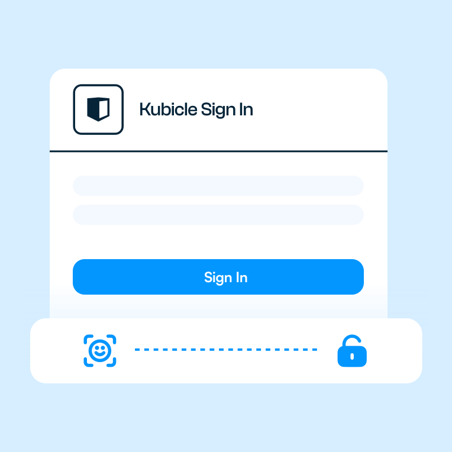
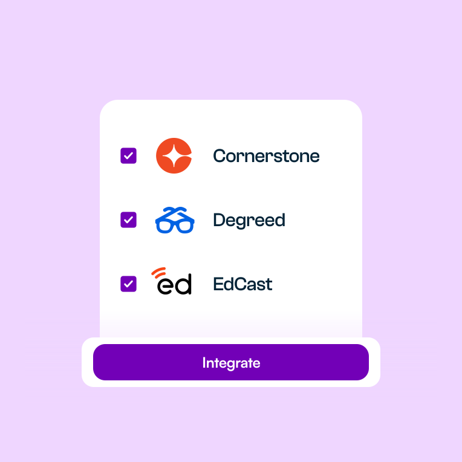
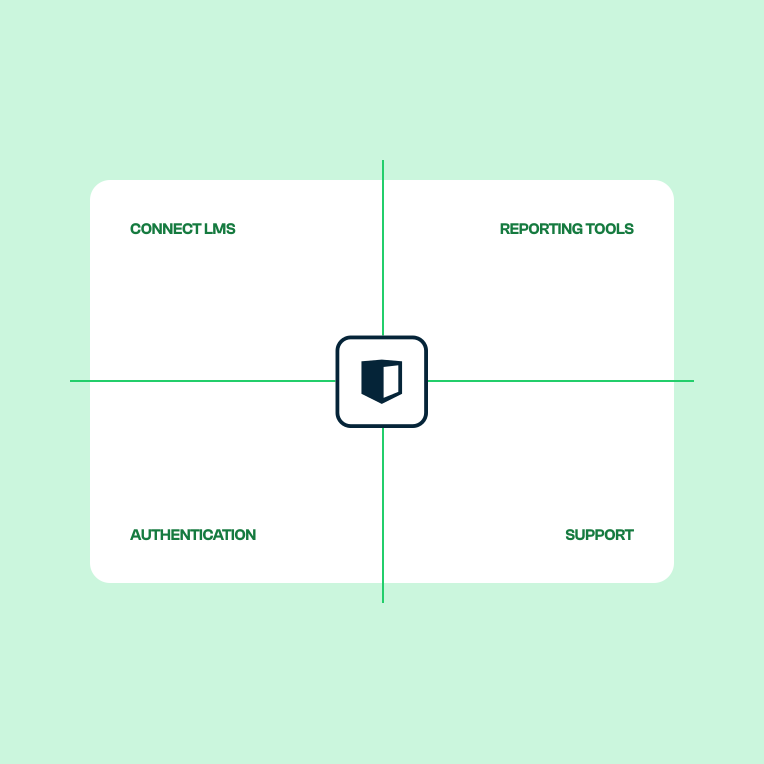

Single Sign‑On, LMS and LXP integrations, engagement and skill‑gain data feeds, and a dedicated engineering team for anything bespoke. Built so adoption is high, security is auditable, and learning impact is measurable from day one.
Helping enterprise teams build the AI, data and finance skills clients pay for
With SSO, your learners log in once and instantly access everything Kubicle has to offer. No more forgotten passwords or support tickets. A smoother, more secure way to manage learning at scale, with centralised control and a seamless experience from start to finish.

Bring Kubicle's full library of practical, on‑demand courses straight into your LMS or LXP, so your team can learn seamlessly in the flow of work.
With deep‑link support, learners can pick up exactly where they left off, with just one click, no matter what system they're using. Kubicle integrates smoothly with leading platforms like Cornerstone, Degreed and EdCast.

Unlock the full potential of your learning data by connecting Kubicle's analytics to your existing learning ecosystem.
Track engagement, completions and popular content in real time. The insights you need to fine‑tune your programs and prove impact at every level. With seamless data integration, you'll turn learner activity into measurable progress across your organisation.
No two organisations are the same, and neither are their systems. That's why Kubicle offers dedicated support for custom integrations, ensuring our platform fits perfectly into your unique tech stack.
Whether you need to sync with a bespoke LMS, connect to internal reporting tools, or align with enterprise authentication systems, our team is here to help you make it happen. We work closely with your IT team to deliver a seamless, secure integration that supports your goals and scales with your needs.

A snapshot of the technical and application capabilities your IT, L&D and reporting teams can build on. Setup steps and configuration detail live in our support documentation.
Full setup steps, screenshots and API endpoint reference live at support.kubicle.com.
Have a question we haven't answered? Bring it to the demo and we'll cover it on the call.
Talk to Sales →SAML 2.0 and OpenID Connect across all major identity providers, including Okta, Microsoft Entra ID (formerly Azure AD), Ping Identity, Google Workspace, OneLogin, JumpCloud and Auth0. SCIM provisioning is supported for lifecycle management. If you run a less common provider, our engineering team will scope the integration as part of the rollout.
Native partnerships exist with Cornerstone, Degreed and EdCast, with deep‑link support so learners pick up exactly where they left off. xAPI cartridges are available for any system that conforms to the standard: Workday Learning, SAP SuccessFactors, Docebo, LearnUpon, Moodle, Blackboard, Canvas and many more. For anything bespoke, our engineering team builds the integration in the engagement.
A REST API exposes engagement (logins, time on lesson), completion (course, lesson, exam), assessment (scores by competency) and skill‑gain endpoints. OAuth 2.0 client credentials flow with rotated keys. Optional webhook subscriptions push real‑time events for completions, certificates and inactivity. Output schemas are stable and versioned, so your warehouse pipeline doesn't break with a release.
Yes. EU data residency is available out of the box. Regional hosting in the US, UK and Asia‑Pacific is available on request as part of the enterprise contract. Audit logging, encryption keys and backup snapshots stay within the chosen region.
ISO 27001 certified, GDPR‑compliant, with regular third‑party penetration testing. The full security pack is shared under NDA inside the procurement process. Granular role‑based access, audit logging on every administrative action, and SSO across all major identity providers are built in.
SSO and an off‑the‑shelf LMS integration typically take 24 to 48 hours from kickoff. The Reporting API and webhook subscriptions take a similar window. Custom engineering work is scoped during discovery and most bespoke integrations land in two to four weeks. SLA‑backed observability is included once the integration is live.
Standard integrations (SSO, the major LMS systems, Reporting API, webhooks) are included in the enterprise contract at no extra cost. Custom engineering work is priced as part of the customer success engagement and appears as a fixed‑fee line item on the same statement of work, scoped during discovery.
Tell us a few things and we'll come to the call with the integration map for your environment, the SSO and LMS connectors we'd recommend, and a quote you can take to IT and procurement.